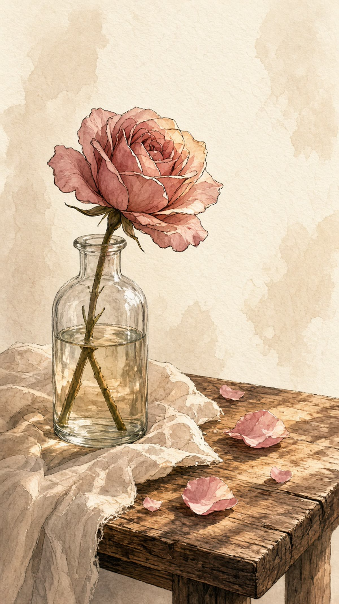

A Beggar and A Rose
乞丐与玫瑰
There was a young woman who sold roses on the street. One evening, she'd sold most of them, and the light was going. She started for home. Then she saw she still had one rose in her hand. A man was sitting by the road, begging. She gave him the rose, and walked home with a light heart.
He had never imagined something like this could happen to him. No one had ever given him a rose. It felt like the world had turned upside down. Maybe he had never really been kind to himself. Maybe he had never let anyone love him. So he stopped begging for the day, and he went home.
At home, he found a bottle and filled it with water. He set the rose in it, put it on the table, and sat there, just looking. Then it hit him. A flower that beautiful didn't belong in a dirty bottle. So he washed the bottle until it was clean.
He sat down beside it once more, and looked at the rose. Then he saw the table. It was a mess. A clean bottle and a rose like that deserved better. So he wiped the table down, and put things in order.
He sat back and took it in. The room still didn't belong with the rose. So he cleaned the whole room. He put everything in its place, and took the trash out.
When he was done, the room felt warm. Almost like a home. For a moment, he forgot where he was. Then he looked in the mirror. He saw wild hair, dirty clothes, and a rough beard. He couldn't believe that was him. What right did he have to stay in a room like this, with a rose like that?
So he took a bath. The first one he'd had in years. He found some clothes that were old, but cleaner. He changed, shaved, and tidied himself up. He looked in the mirror again. A young, handsome face looked back. One he hadn't seen in a long time.
And in that moment, he felt worth something. Why should he keep living as a beggar? It was the first time he'd asked himself that, in all the years. Something in him woke up. He thought, I'm not nothing. He looked around the room, and at the rose, and he made the most important decision of his life.
Tomorrow, he wouldn't beg. He would look for work. He wasn't afraid of getting dirty, or of getting tired. The next day, he found a job. Maybe it was the rose blooming in his chest that kept him going. He kept at it. And years later, he had built a life he could be proud of.
A rose given without a reason. A life that begins to change.